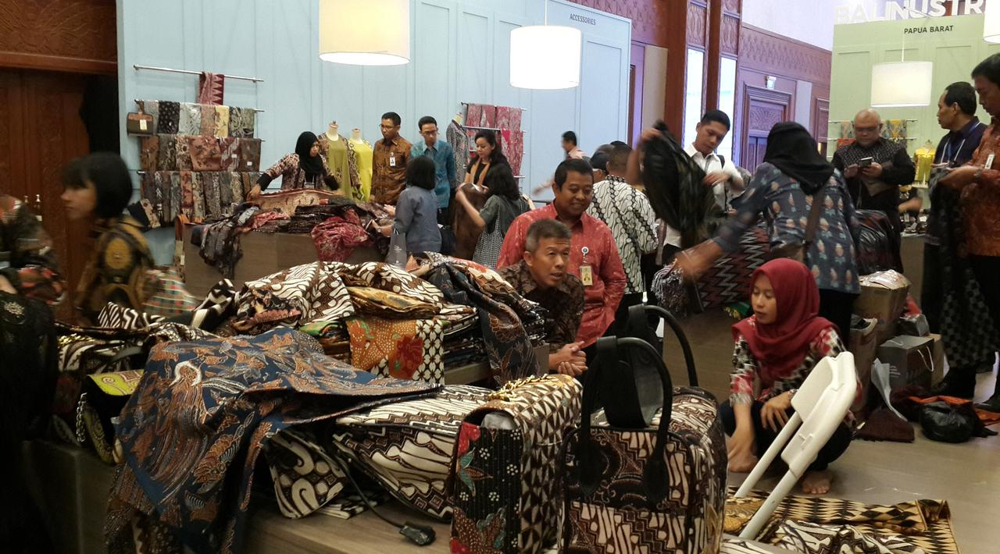

"Produk buatan tangan yang unik dengan ciri khas daerah asal merupakan keunggulan dari produk UMKM. Produk ini sangat diminati di pasar domestik dan internasional," ujar Direktur Utama Karya Juara Nefti Adnan dalam keterangan resminya pada Sabtu (16/9/2017).
Ini Hambatan UMKM Tembus Pasar Internasional
Berikut Ini Merupakan Beberapa Hambatan UMKM tembus pasar intenasionalr
Liputan6.com, Jakarta Pengembangan usaha mikro, kecil dan menengah (UMKM) di Indonesia masih menemui banyak hambatan. Dua hambatan yang sering ditemukan terkait modal dan pemasaran. Padahal UMKM sudah terbukti mampu menggerakkan ekonomi Indonesia. Saat ini, masih banyak UMKM yang baru bisa memasarkan produknya hanya di pasar lokal. Padahal mutu dan kualitas produk mereka tidak bisa dipandang sebelah mata."Produk buatan tangan yang unik dengan ciri khas daerah asal merupakan keunggulan dari produk UMKM. Produk ini sangat diminati di pasar domestik dan internasional," ujar Direktur Utama Karya Juara Nefti Adnan dalam keterangan resminya pada Sabtu (16/9/2017).